02/03/14
Lamb goes great with marinade and spices, sometimes the flavor is a little two gamey for me. A sweet marinade / seasoning will work wonders on your lamb. I love using whole hive honey for these circumstances :)
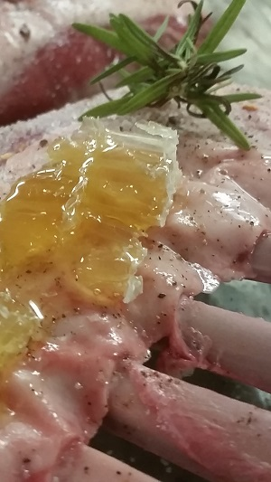 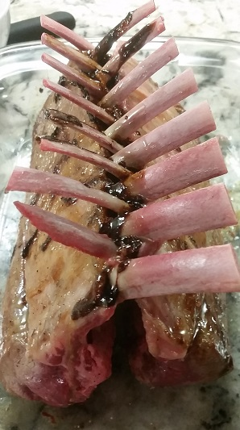
01/24/14
This carrot cake came out incredible! My boyfriend says he wants one for his birthday :P
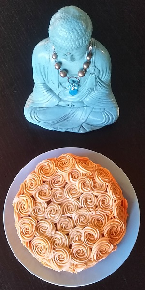 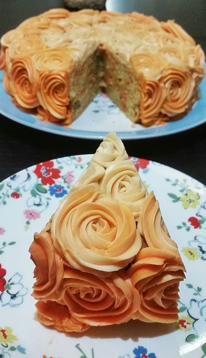
01/24/14
My first rose cake at home!
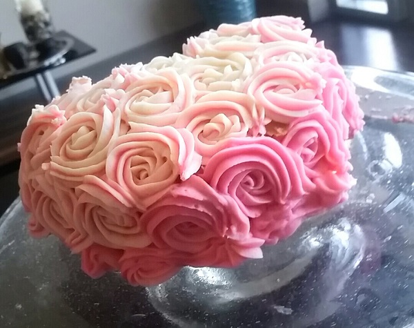
12/12/14
Have never worked on a team accomodating such a large party. Awesome experience!
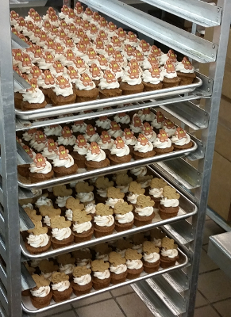 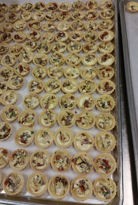
12/08/14
So cute.
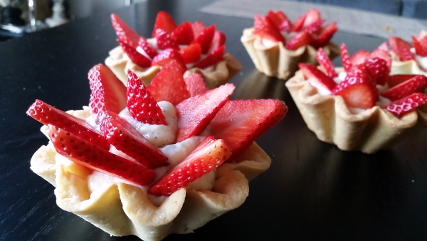
12/07/14
Love paella.
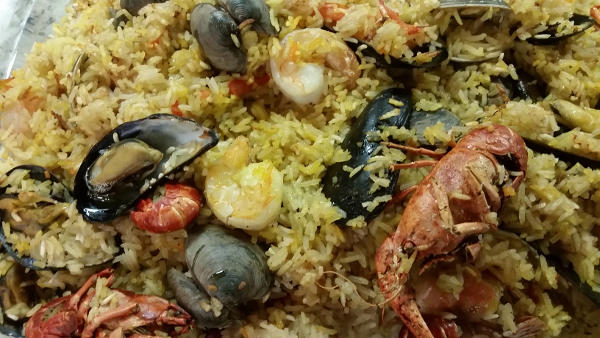
12/04/14
Simplicity is key, nothing but pie and sliced fruits.
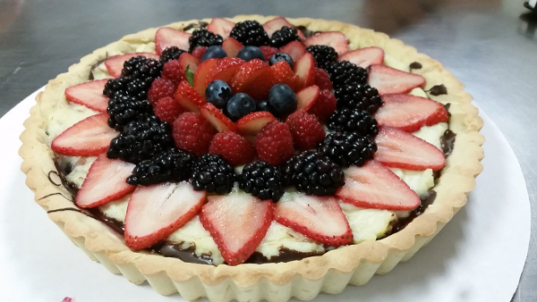
11/25/14
I baked this pumpkin pie to accompany the turkey for friends-giving! Each leaf was individually hand-cut.
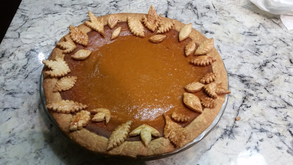
11/20/14
One of my FAVORITE breakfast items. Omnomnomnomnomnomnomnomnomnom !
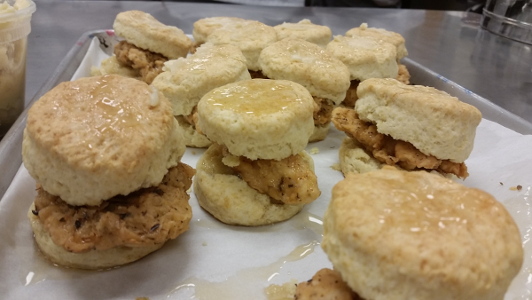
11/18/14
I had no idea how biscottis were made, until now :P
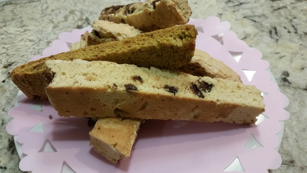
11/18/14
Some delicious pastries we made in class
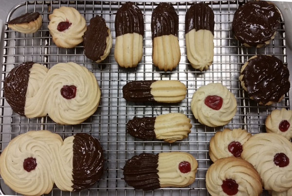
11/17/14
The first set of chocolate chip cookies I learned to make at LCB.
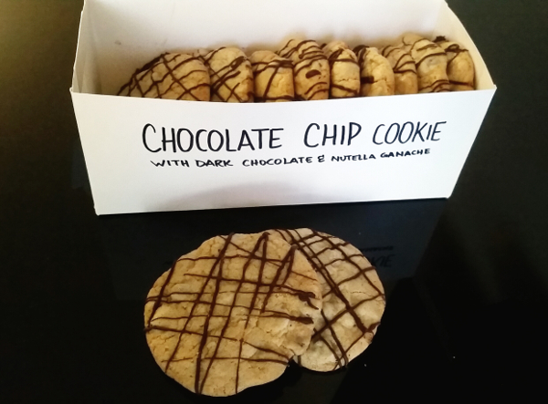
11/16/14
The picture says it all.
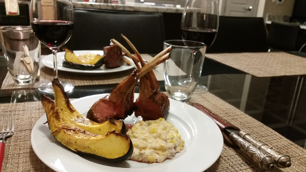
11/11/14
This was lots of fun, the cheese was carefully paired with two wines and the party was great. Scordello cheese was absolutely inciredible, we were particular fans of the goat cheese we tried. Must go back!!!
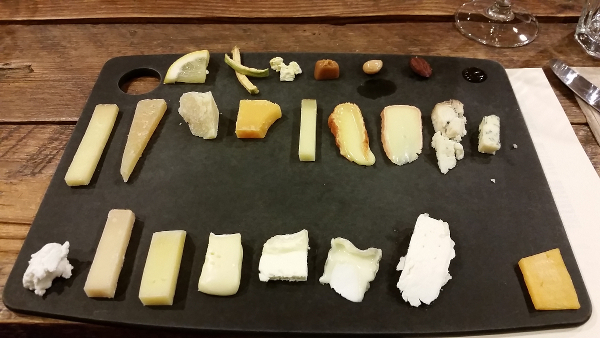
10/28/14
So much fun! Mine is Jigsaw :)
10/27/14
I cannot tell you how delicious this scone was... or is it mashed potatoes? Yes, that's right. It's mashed potatoes.
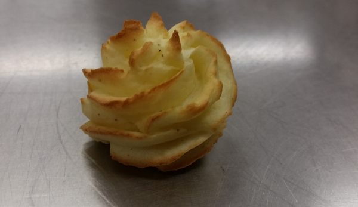
10/27/14
Practicing presentation @ LCB.
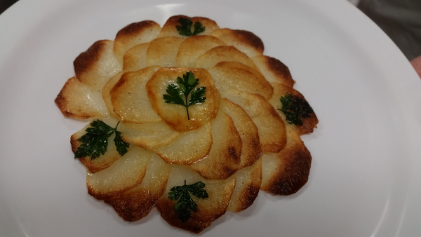
09/28/14
Flan has been around for a very long time. Original invented by the Romans it is a classic dessert which also happens to be one of my favorites. This recipe has been with my family for a very long time :)
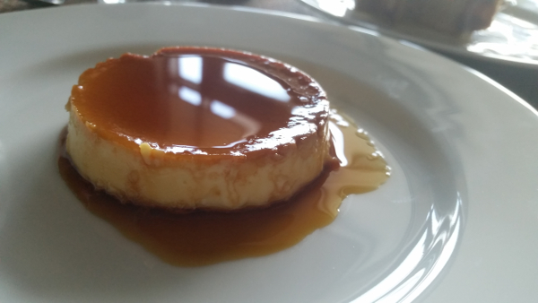
06/10/14
We found some delicious salmon at the local fish market. Grilled with zesty lemon sauce, the thick cut was incredible.
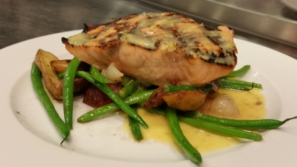
05/01/14
Something about mushrooms just goes great with steak.
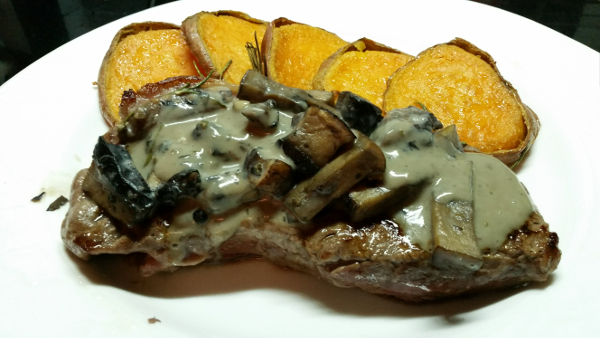
04/24/14
Arepas are good for the soul!
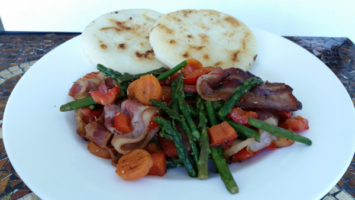
04/20/14
Lamb racks marinated in a variety of spices and topped off with a delicious cranberry sauce.
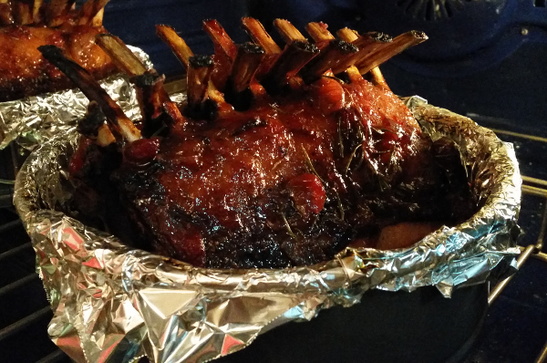
01/15/14
Today we made these delicious bread rolls!
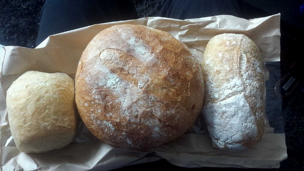
07/11/13
Cooking Dinner!
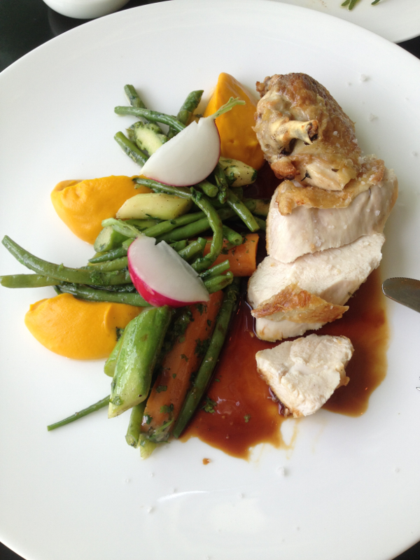
06/28/13
Worth the time it takes to make!
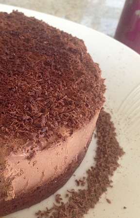